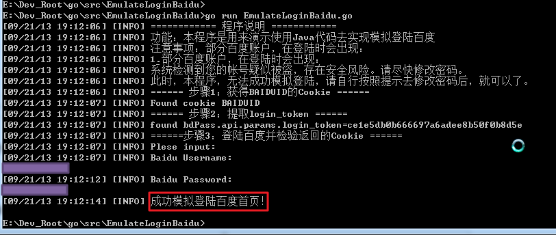

Go模拟登录百度首页
很久之前用Go实现了模拟登录百度
完整代码为：
/*
* [File]
* EmulateLoginBaidu.go
*
* [Function]
* 【记录】用go语言实现模拟登陆百度
* https://www.crifan.com/emulate_login_baidu_using_go_language/
*
* [Version]
* 2013-09-21
*
* [Contact]
* https://www.crifan.com/about/me/
*/
package main
import (
"fmt"
//"builtin"
//"log"
"os"
"runtime"
"path"
"strings"
"time"
//"io"
"io/ioutil"
"net/http"
"net/http/cookiejar"
"net/url"
//"sync"
//"net/url"
"regexp"
//"bufio"
"bytes"
)
//import l4g "log4go.googlecode.com/hg"
//import l4g "code.google.com/p/log4go"
import "code.google.com/p/log4go"
/***************************************************************************************************
Global Variables
***************************************************************************************************/
var gCurCookies []*http.Cookie;
var gCurCookieJar *cookiejar.Jar;
var gLogger log4go.Logger;
/***************************************************************************************************
Functions
***************************************************************************************************/
//do init before all others
func initAll(){
gCurCookies = nil
//var err error;
gCurCookieJar,_ = cookiejar.New(nil)
gLogger = nil
initLogger()
initCrifanLib()
}
//de-init for all
func deinitAll(){
gCurCookies = nil
if(nil == gLogger) {
gLogger.Close();
//os.Stdout.Sync() //try manually flush, but can not fix log4go's flush bug
gLogger = nil
}
}
//do some init for crifanLib
func initCrifanLib(){
gLogger.Debug("init for crifanLib")
gCurCookies = nil
return
}
//init for logger
func initLogger(){
var filenameOnly string = GetCurFilename()
var logFilename string = filenameOnly + ".log";
//gLogger = log4go.NewLogger()
//gLogger = make(log4go.Logger)
//for console
//gLogger.AddFilter("stdout", log4go.INFO, log4go.NewConsoleLogWriter())
gLogger = log4go.NewDefaultLogger(log4go.INFO)
//for log file
if _, err := os.Stat(logFilename); err == nil {
//fmt.Printf("found old log file %s, now remove it\n", logFilename)
os.Remove(logFilename)
}
//gLogger.AddFilter("logfile", log4go.FINEST, log4go.NewFileLogWriter(logFilename, true))
//gLogger.AddFilter("logfile", log4go.FINEST, log4go.NewFileLogWriter(logFilename, false))
gLogger.AddFilter("log", log4go.FINEST, log4go.NewFileLogWriter(logFilename, false))
gLogger.Debug("Current time is : %s", time.Now().Format("15:04:05 MST 2006/01/02"))
return
}
// GetCurFilename
// Get current file name, without suffix
func GetCurFilename() string {
_, fulleFilename, _, _ := runtime.Caller(0)
//fmt.Println(fulleFilename)
var filenameWithSuffix string
filenameWithSuffix = path.Base(fulleFilename)
//fmt.Println("filenameWithSuffix=", filenameWithSuffix)
var fileSuffix string
fileSuffix = path.Ext(filenameWithSuffix)
//fmt.Println("fileSuffix=", fileSuffix)
var filenameOnly string
filenameOnly = strings.TrimSuffix(filenameWithSuffix, fileSuffix)
//fmt.Println("filenameOnly=", filenameOnly)
return filenameOnly
}
//get url response html
func getUrlRespHtml(strUrl string, postDict map[string]string) string{
gLogger.Debug("in getUrlRespHtml, strUrl=%s", strUrl)
gLogger.Debug("postDict=%s", postDict)
var respHtml string = "";
httpClient := &http.Client{
//Transport:nil,
//CheckRedirect: nil,
Jar:gCurCookieJar,
}
var httpReq *http.Request
//var newReqErr error
if nil == postDict {
gLogger.Debug("is GET")
//httpReq, newReqErr = http.NewRequest("GET", strUrl, nil)
httpReq, _ = http.NewRequest("GET", strUrl, nil)
// ...
//httpReq.Header.Add("If-None-Match", `W/"wyzzy"`)
} else {
//【记录】go语言中实现http的POST且传递对应的post data
//https://www.crifan.com/go_language_http_do_post_pass_post_data
gLogger.Debug("is POST")
postValues := url.Values{}
for postKey, PostValue := range postDict{
postValues.Set(postKey, PostValue)
}
gLogger.Debug("postValues=%s", postValues)
postDataStr := postValues.Encode()
gLogger.Debug("postDataStr=%s", postDataStr)
postDataBytes := []byte(postDataStr)
gLogger.Debug("postDataBytes=%s", postDataBytes)
postBytesReader := bytes.NewReader(postDataBytes)
//httpReq, newReqErr = http.NewRequest("POST", strUrl, postBytesReader)
httpReq, _ = http.NewRequest("POST", strUrl, postBytesReader)
//httpReq.Header.Set("Content-Type", "application/x-www-form-urlencoded; param=value")
httpReq.Header.Add("Content-Type", "application/x-www-form-urlencoded")
}
httpResp, err := httpClient.Do(httpReq)
// ...
//httpResp, err := http.Get(strUrl)
//gLogger.Info("http.Get done")
if err != nil {
gLogger.Warn("http get strUrl=%s response error=%s\n", strUrl, err.Error())
}
gLogger.Debug("httpResp.Header=%s", httpResp.Header)
gLogger.Debug("httpResp.Status=%s", httpResp.Status)
defer httpResp.Body.Close()
// gLogger.Info("defer httpResp.Body.Close done")
body, errReadAll := ioutil.ReadAll(httpResp.Body)
//gLogger.Info("ioutil.ReadAll done")
if errReadAll != nil {
gLogger.Warn("get response for strUrl=%s got error=%s\n", strUrl, errReadAll.Error())
}
//gLogger.Debug("body=%s\n", body)
//gCurCookies = httpResp.Cookies()
//gCurCookieJar = httpClient.Jar;
gCurCookies = gCurCookieJar.Cookies(httpReq.URL);
//gLogger.Info("httpResp.Cookies done")
//respHtml = "just for test log ok or not"
respHtml = string(body)
//gLogger.Info("httpResp body []byte to string done")
return respHtml
}
func dbgPrintCurCookies() {
var cookieNum int = len(gCurCookies);
gLogger.Debug("cookieNum=%d", cookieNum)
for i := 0; i < cookieNum; i++ {
var curCk *http.Cookie = gCurCookies[i];
//gLogger.Debug("curCk.Raw=%s", curCk.Raw)
gLogger.Debug("------ Cookie [%d]------", i)
gLogger.Debug("Name\t\t=%s", curCk.Name)
gLogger.Debug("Value\t=%s", curCk.Value)
gLogger.Debug("Path\t\t=%s", curCk.Path)
gLogger.Debug("Domain\t=%s", curCk.Domain)
gLogger.Debug("Expires\t=%s", curCk.Expires)
gLogger.Debug("RawExpires\t=%s", curCk.RawExpires)
gLogger.Debug("MaxAge\t=%d", curCk.MaxAge)
gLogger.Debug("Secure\t=%t", curCk.Secure)
gLogger.Debug("HttpOnly\t=%t", curCk.HttpOnly)
gLogger.Debug("Raw\t\t=%s", curCk.Raw)
gLogger.Debug("Unparsed\t=%s", curCk.Unparsed)
}
}
func main() {
initAll()
gLogger.Info("============ 程序说明 ============");
gLogger.Info("功能：本程序是用来演示使用Java代码去实现模拟登陆百度");
gLogger.Info("注意事项：部分百度账户，在登陆时会出现：");
gLogger.Info("1.部分百度账户，在登陆时会出现：");
gLogger.Info("系统检测到您的帐号疑似被盗，存在安全风险。请尽快修改密码。");
gLogger.Info("此时，本程序，无法成功模拟登陆，请自行按照提示去修改密码后，就可以了。");
//step1: access baidu url to get cookie BAIDUID
gLogger.Info("====== 步骤1：获得BAIDUID的Cookie ======")
var baiduMainUrl string = "http://www.baidu.com/";
gLogger.Debug("baiduMainUrl=%s", baiduMainUrl)
respHtml := getUrlRespHtml(baiduMainUrl, nil)
gLogger.Debug("respHtml=%s", respHtml)
dbgPrintCurCookies()
//check cookie
var bGotCookieBaiduid = false;
//var cookieNameListToCheck []string = ["BAIDUID"]
//toCheckCookieNameList := [1]string{"BAIDUID"}
toCheckCookieNameList := []string{"BAIDUID"}
toCheckCookieNum := len(toCheckCookieNameList)
gLogger.Debug("toCheckCookieNum=%d", toCheckCookieNum)
curCookieNum := len(gCurCookies)
gLogger.Debug("curCookieNum=%d", curCookieNum)
for i := 0; i < toCheckCookieNum; i++ {
toCheckCkName := toCheckCookieNameList[i];
gLogger.Debug("[%d]toCheckCkName=%s", i, toCheckCkName)
for j := 0; j < curCookieNum; j++{
curCookie := gCurCookies[j]
if(strings.EqualFold(toCheckCkName, curCookie.Name)){
bGotCookieBaiduid = true;
break;
}
}
}
if bGotCookieBaiduid {
gLogger.Info("Found cookie BAIDUID");
}else{
gLogger.Info("Not found cookie BAIDUID");
}
//step2: login, pass paras, extract resp cookie
gLogger.Info("====== 步骤2：提取login_token ======");
bExtractTokenValueOK := false
strLoginToken := ""
var getApiRespHtml string;
if bGotCookieBaiduid{
//https://passport.baidu.com/v2/api/?getapi&class=login&tpl=mn&tangram=true
var getapiUrl string = "https://passport.baidu.com/v2/api/?getapi&class=login&tpl=mn&tangram=true";
getApiRespHtml = getUrlRespHtml(getapiUrl, nil);
gLogger.Debug("getApiRespHtml=%s", getApiRespHtml);
dbgPrintCurCookies()
//bdPass.api.params.login_token='278623fc5463aa25b0189ddd34165592';
//use regex to extract login_token
//【记录】go语言中用正则表达式查找某个值
//https://www.crifan.com/go_language_regular_expression_find_value/
loginTokenP, _ := regexp.Compile(`bdPass\.api\.params\.login_token='(?P<loginToken>\w+)';`)
//loginToken := loginTokenP.FindString(getApiRespHtml);
//loginToken := loginTokenP.FindSubmatch(getApiRespHtml);
foundLoginToken := loginTokenP.FindStringSubmatch(getApiRespHtml);
gLogger.Debug("foundLoginToken=%s", foundLoginToken);
if nil != foundLoginToken {
strLoginToken = foundLoginToken[1] //tmp go regexp not support named group, so use index here
gLogger.Info("found bdPass.api.params.login_token=%s", strLoginToken);
bExtractTokenValueOK = true;
} else {
gLogger.Warn(" not found login_token from html=%s", getApiRespHtml);
}
}
//step3: verify returned cookies
bLoginBaiduOk := false;
if bGotCookieBaiduid && bExtractTokenValueOK {
gLogger.Info("======步骤3：登陆百度并检验返回的Cookie ======");
staticPageUrl := "http://www.baidu.com/cache/user/html/jump.html";
postDict := map[string]string{}
//postDict["ppui_logintime"] = ""
postDict["charset"] = "utf-8"
//postDict["codestring"] = ""
postDict["token"] = strLoginToken
postDict["isPhone"] = "false"
postDict["index"] = "0"
//postDict["u"] = ""
//postDict["safeflg"] = "0"
postDict["staticpage"] = staticPageUrl
postDict["loginType"] = "1"
postDict["tpl"] = "mn"
postDict["callback"] = "parent.bdPass.api.login._postCallback"
//【已解决】go语言中获得控制台输入的字符串
//https://www.crifan.com/go_language_get_console_input_string/
strBaiduUsername := ""
strBaiduPassword := ""
gLogger.Info("Plese input:")
gLogger.Info("Baidu Username:")
_, err1 := fmt.Scanln(&strBaiduUsername)
if nil == err1 {
gLogger.Debug("strBaiduUsername=%s", strBaiduUsername)
}
gLogger.Info("Baidu Password:")
_, err2 := fmt.Scanln(&strBaiduPassword)
if nil == err2 {
gLogger.Debug("strBaiduPassword=%s", strBaiduPassword)
}
postDict["username"] = strBaiduUsername
postDict["password"] = strBaiduPassword
postDict["verifycode"] = ""
postDict["mem_pass"] = "on"
gLogger.Debug("postDict=%s", postDict)
baiduMainLoginUrl := "https://passport.baidu.com/v2/api/?login";
loginBaiduRespHtml := getUrlRespHtml(baiduMainLoginUrl, postDict);
gLogger.Debug("loginBaiduRespHtml=%s", loginBaiduRespHtml)
dbgPrintCurCookies();
//check resp cookies exist or not
cookieNameDict := map[string]bool{
"BDUSS" : false,
"PTOKEN" : false,
"STOKEN" : false,
//"SAVEUSERID": false, //be deleted
}
for cookieName, _ := range cookieNameDict {
for _, singleCookie := range gCurCookies {
//if(strings.EqualFold(cookieName, singleCookie.Name)){
if cookieName == singleCookie.Name {
cookieNameDict[cookieName] = true;
gLogger.Debug("Found cookie %s", cookieName)
}
}
}
gLogger.Debug("After check resp cookie, cookieNameDict=%s", cookieNameDict)
bAllCookiesFound := true
for _, bIsExist := range cookieNameDict {
bAllCookiesFound = bAllCookiesFound && bIsExist
}
bLoginBaiduOk = bAllCookiesFound
if (bLoginBaiduOk) {
gLogger.Info("成功模拟登陆百度首页！" );
} else{
gLogger.Info("模拟登陆百度首页 失败！");
gLogger.Info("所返回的HTML源码为：" + loginBaiduRespHtml);
}
}
deinitAll()
//【workaround】go语言中用log4go输出信息时有bug：只输出部分信息，甚至是无任何输出
//https://www.crifan.com/go_language_log4go_only_output_part_info/
time.Sleep(100 * time.Millisecond)
}
效果截图：

具体过程详见：